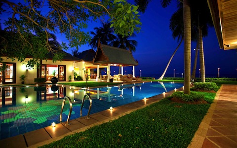
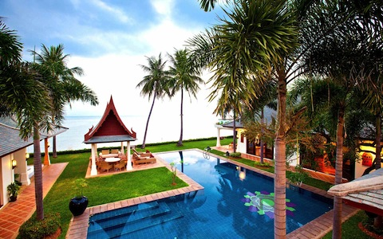

KATE & CHARLIE’S ISLAND WEDDING CEREMONY
THURSDAY MAY 16, 2013 at 4:30 PM
VILLA LOTUS, MISKAWAAN RESORT
MAENAM BEACH, KOH SAMUI, THAILAND

View Larger Map
We are excited to have friends and family join us in Thailand for our wedding. Kate & Charlie will arrive on the island on May 9th.
Here is the schedule of events for the wedding in Thailand:
Wednesday May 15th: Groom's dinner hosted by Chris & Sharon Chrisman at Villa Lotus.
Thursday May 16th at 4:30pm: Wedding ceremony, dinner and reception at Villa Lotus in the Miskawaan Resort. Plan to get there early, enjoy a pre-ceremony drink and then stay late partying with us and our Filipino band.

Accommodation:
There are hundreds of resorts to choose from on Koh Samui. From Wednesday – Saturday, Kate, Charlie and their families will be staying at the Villa Lotus. This is on the island's northern beach. Within walking distance via the beach are a few resorts to choose from, including the Moonhut Bungalows, Hutcha Resort, the Hammock, and Hacienda. If you are looking for other hotels in the area, look for hotels near Maenam beach. Farther east you'll find the area Bo Phut, which has lots of accommodation choices. On the east coast, Chaweng beach is known for its beauty and a bit further south is Lamai Beach.